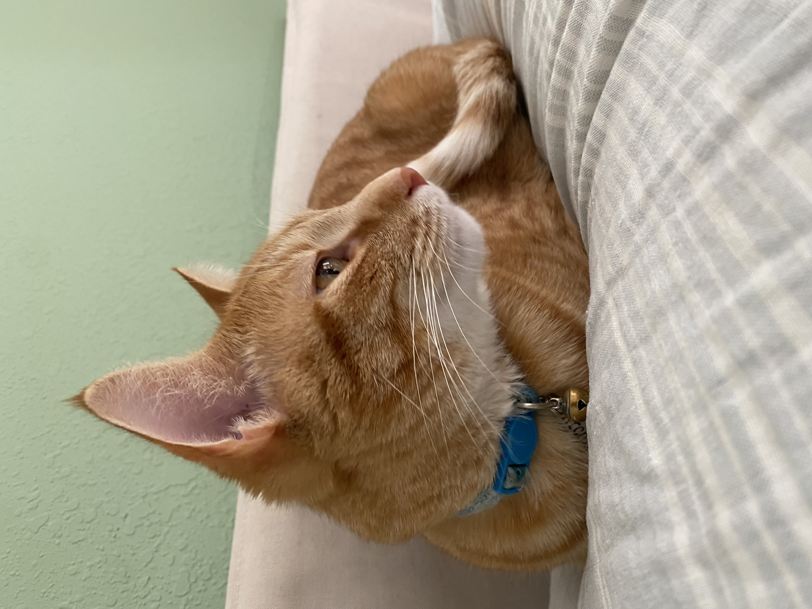
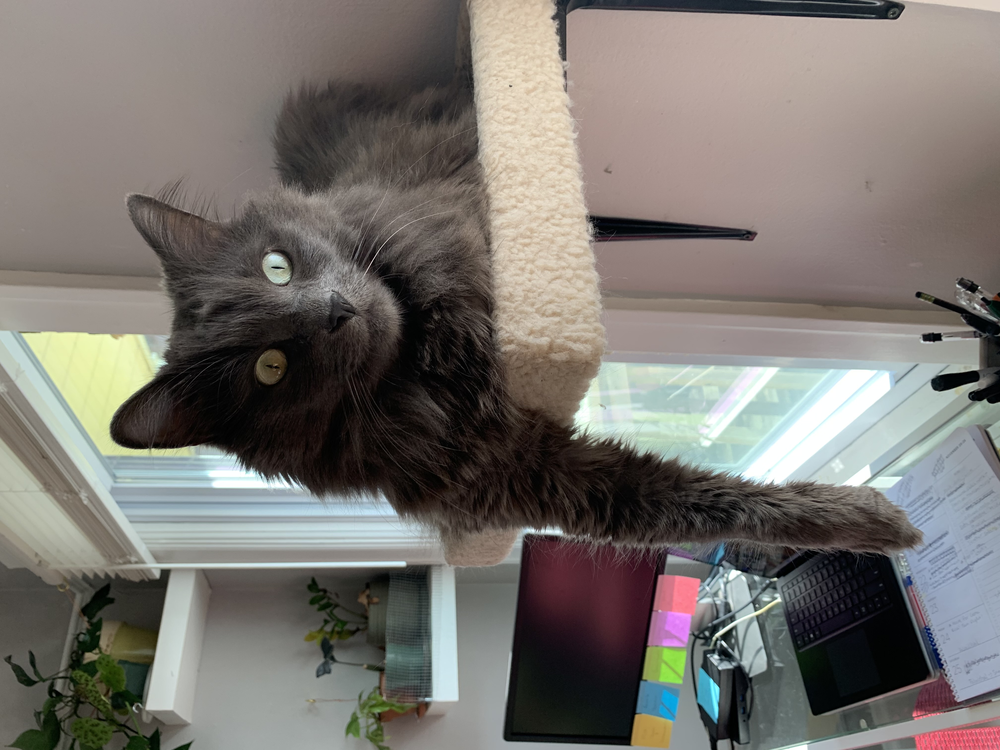
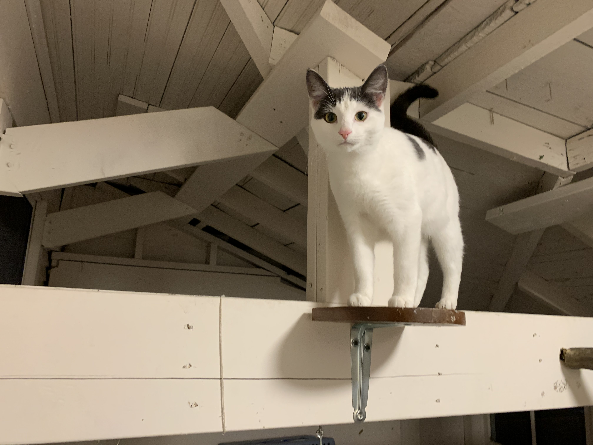

Bacon Q Dog

Bacon Q. Dog is a 9yr old labradoodle. He prefers to spend his days lounging among the three different beds/couches that his family has gifted him. He enjoys a walk or two around the neighborhood, as long as he can pretend that he doesn't see any of the other animals to avoid the embarrassment of not wanting to admit he has no wolf-like skills in chasing them.
At night just as the rest of the family is ready to relax, Bacon suddenly wants to release all of his energy. He will place his toys on a mini couch and frantically drag the couch around, giving his toys "a ride." There is also a lot of rolling. Lots and lots of rolling.
Photo Gallery


Likes
- Belly rubs
- Playing tug-of-war
- Sneaking onto the couch
Mini

Mini is a 13 year old toy fox terrier. She loves lounging in the sun and people watching. Shes always ready for a walk but make sure it is not too long and that there is a tasty treat waiting for her!
Likes
- Booty scratches
- Sunbathing
- Treats
Edgar

Edgar is a four year old Manx cat. He is lovingly referred to as Gurt by his family and loves to cuddle and nap to pass the time. His best friend Archie keeps him on his toes and might wake Gurt up from more naps than he wants.
Likes
- Chin Scrachtes
- Naps
- Watching birds with Archie
Archie
Archie is a 2 year old orange cat. He lives up to the sterotypes about orange cats and causes his fair chare of chaos. He often is waking Edgar up or trying to get Mini to play.
Likes
- Waking Edgar up
- Causing Chaos
- Watching birds with Edgar
Homer
Homer is a five year old Nebelung cat. He loves to strach out and for for walks in the yard with his humans. he is good friends with Edgar and Archie and of course loves his little friend Percy.
- Watching birds and bird videos
- Food
- Cuddling
Percy
Percy is a rambunctious kitten who is amost a year old. She loves to go on playdates to see her sibilings and climbing around is her passion.
- Playing
- Napping
- Being naughty